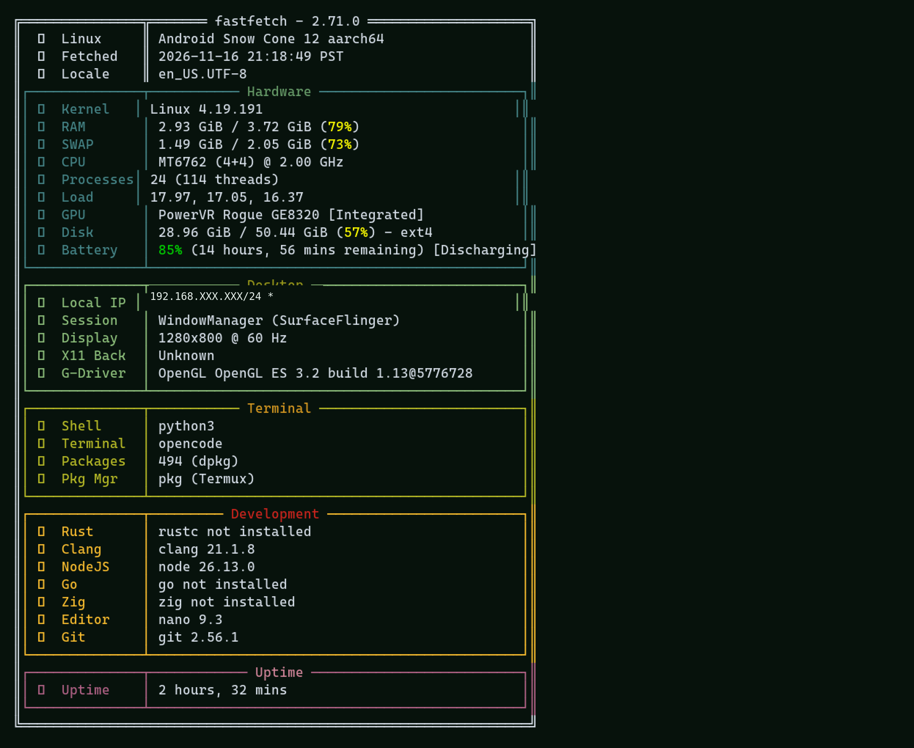

← Mark44928 / projects
Config · fastfetch · Android 12 + X11
android12-fastfetch
A fastfetch layout that understands Android properties and native Termux desktops. Includes minimal, Greenit and Bluney companion presets.
git clone https://github.com/Mark44928/android12-fastfetch.git
cd android12-fastfetch && bash install.sh

- Android-awareproperties instead of generic Linux guesses
- Presetsminimal, Greenit and Bluney
- Fixed layouthardware, desktop, tools and uptime
- Installer smokebacks up, renders and uninstalls